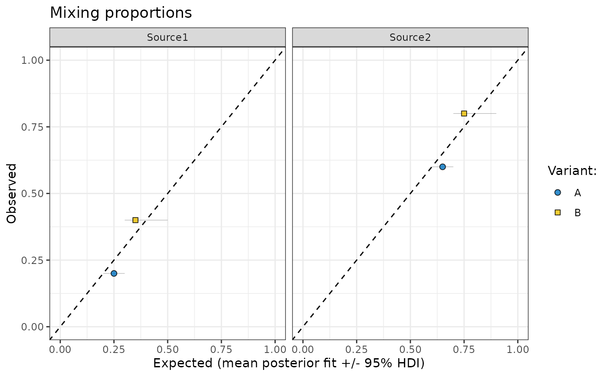

R/plotting.R
plot_multiple_faceted_scatter_avg.RdThis function creates a faceted scatter plot to compare observed and predicted values, including error bars and visual grouping by variants. It is designed for visualising mixing proportions or similar data with multiple sources. It's mostly used to plot outputs of make_post_prop_long.
plot_multiple_faceted_scatter_avg(data, ...)A data frame containing the data to be plotted. It must include the following columns:
Numeric. The observed values for each source.
Numeric. The predicted values for each source.
Numeric. The lower bound of the error bar for the predicted values.
Numeric. The upper bound of the error bar for the predicted values.
Factor or character. The grouping variable for different variants.
Factor or character. The source variable used for faceting.
Additional arguments passed to the labs function for customizing plot labels.
A ggplot object representing the faceted
The function generates a scatter plot with error bars for predicted values, points representing
observed vs. predicted values, and a diagonal reference line (slope = 1) for visual comparison.
The plot is faceted by the source variable and grouped by the Variant: variable, with
customizable shapes and colors for each variant.
The scale_fill_jco function from the ggsci package is used to apply a color palette,
and the scale_shape_manual function is used to define point shapes.
data <- data.frame(
Observed = c(0.2, 0.4, 0.6, 0.8),
Predicted = c(0.25, 0.35, 0.65, 0.75),
ymin = c(0.2, 0.3, 0.6, 0.7),
ymax = c(0.3, 0.5, 0.7, 0.9),
`Variant:` = c("A", "B", "A", "B"),
source = c("Source1", "Source1", "Source2", "Source2"),
check.names = FALSE
)
plot_multiple_faceted_scatter_avg(data)
